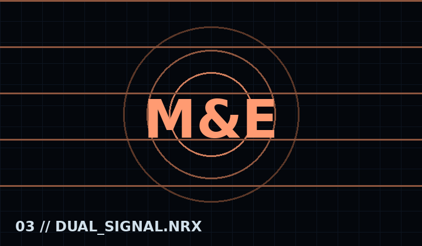
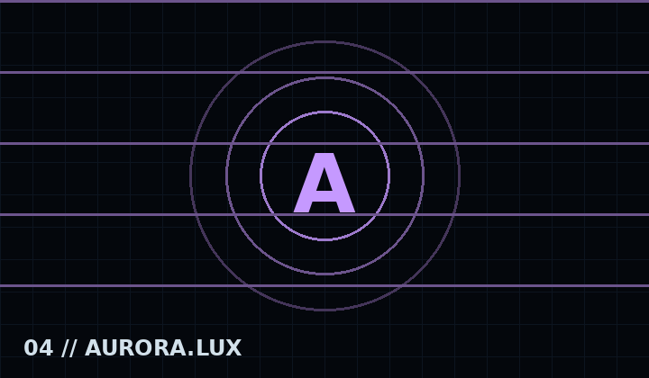
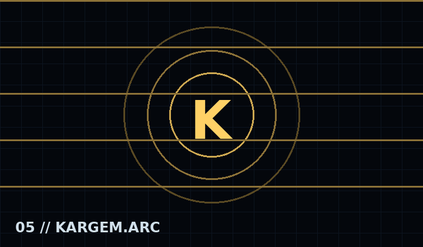
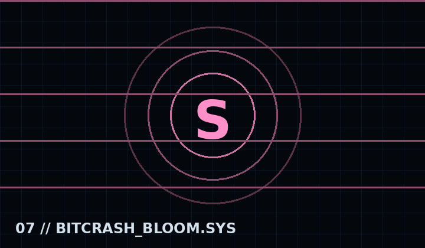
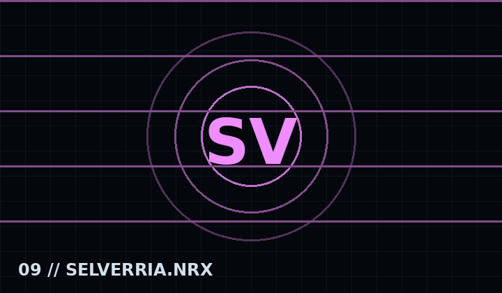
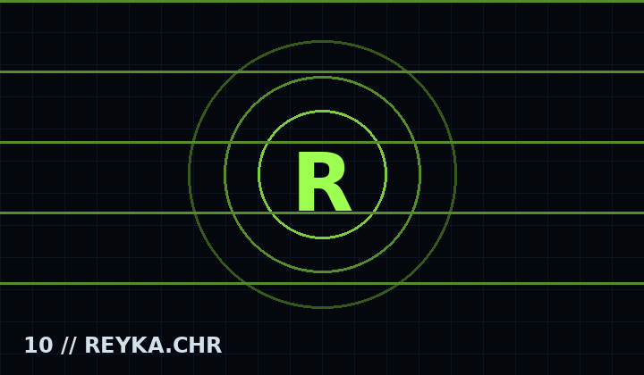

♫
Canciones
Índice musical con créditos, letras, BPM y reproductores preparados para los archivos finales.
Wiki y archivo oficial de NRX : Reality Break. Explora personajes, temporadas, canciones, mecánicas, escenarios y registros del desarrollo.
El orden oficial comienza con las tres temporadas principales, continúa con los rivales y termina con REYKA como archivo especial.










Una anomalía viva codificó a BF y GF para llevarlos a su mundo. Su deseo de alcanzar a los desarrolladores transforma un encuentro amable en una ruptura emocional y digital.
Índice musical con créditos, letras, BPM y reproductores preparados para los archivos finales.
Modos clásico, opponent cover y karaoke, además de anomalías especiales de cada rival.
Registro del motor propio, arquitectura NRX y avances técnicos sin mezclar mods externos.